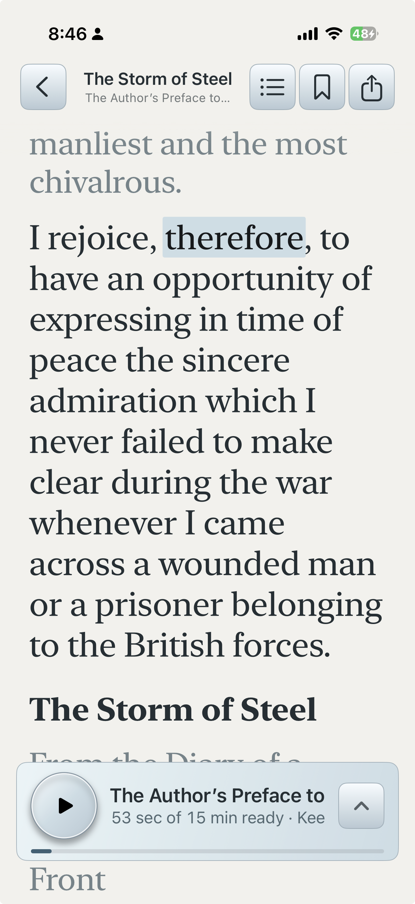
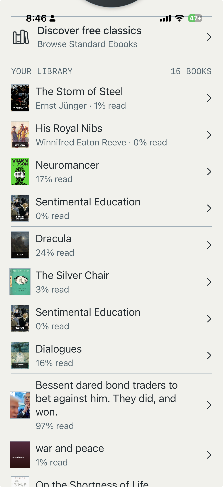
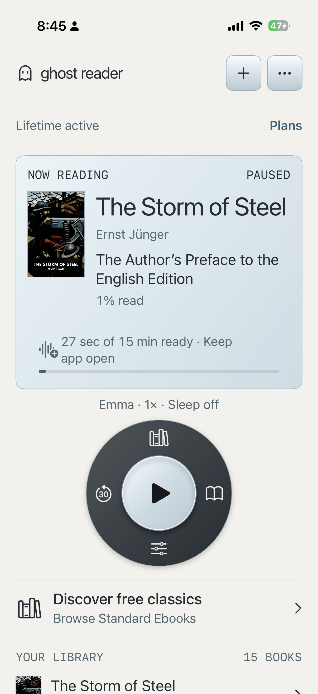
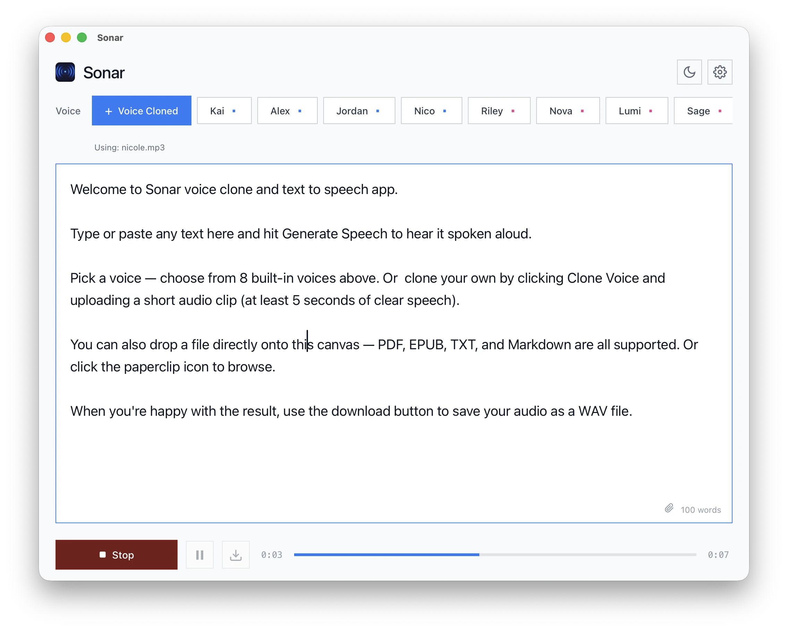

Ghost Reader Live
Turn books and documents into listening time. Read along with the spoken words, pick up where you left off, and discover classics from Standard Ebooks.
Get Ghost Reader

Ghost Reader for your books. Sonar for your voice. Personal audio apps that run on your device.
Explore the apps

Turn books and documents into listening time. Read along with the spoken words, pick up where you left off, and discover classics from Standard Ebooks.
Get Ghost Reader

A voice studio on your Mac. Create narration, clone a voice with permission, and export audio as WAV. Speech is generated on your device.
Get SonarBigHippo Labs is a small independent software studio. We build focused apps with care for the details.
Say hello